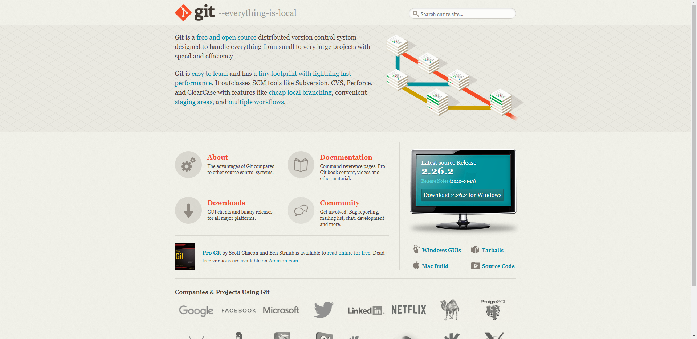
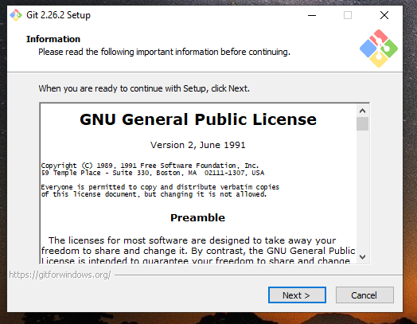
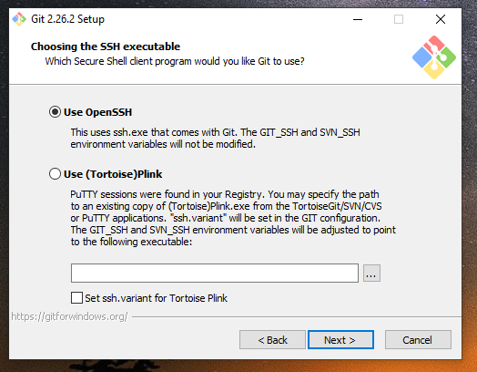

Git SCM installation
🢂 Brief Introduction
Git is a powerful distributed version control (DVC) software used for tracking development workflow of a project. It provides a full-fledged tracking history and Git is generally easy to use. As the ReactOS project infrastructure relies on Git for software development and patch contributions, this tutorial aims primarly on how to install Git SCM and do a basic user configuration.
NOTE: Git SCM is a Git utility that uses CLI (command line interface) as the primary UI for Git interactions. This tutorial doesn't take into account GUI equivalents for Git such as TortoiseGit!
🢂 Obtaining the Git SCM installer
Opening the Git SCM home page you'll be greeted with this (the image is clickable). Proceed with downloading the Git SCM installer.
🢂 Installing Git SCM
Once the downloading has finished, you'll be greeted with this installer window. Proceed with specifying a directory where Git SCM should be installed (or C:\Program Files as default).
Once you're done you have to specify which options to be chosen for the Git installation process. You can either choose the ones you wish or choose the following options that I personally use.

Git will ask you for a text editor to be used by default when Git attempts to launch the chosen editor to, for example, submitting a commit message description or doing an interactive rebase. I personally use Notepad++ as the default text editor for Git but you can choose whatever you want.

Git gives you the ability to use it across different tools such as the Windows command prompt, from dedicated Git Bash (which is provided by the installer) or by using a 3rd party software. Such options might modify your PATH environment variable. I personally choose using Git from Bash only.

Afterwards Git installer asks you which secure extension to be used for Git. By default you can choose OpenSSH.
Furthermore Git will ask for certificates to be used during HTTPS connections. You can choose the native Windows certificates store but I personally use OpenSLL for that.

Now here comes the line endings. Windows uses CRLF (carriage return -- line feed) whereas *nix-like systems such as Linux use LF (line feed) only. Understanding the difference is important as confusing the two character encodings may end up breaking the endings when checking out files or committing changes. It's recommended that you use the first option when concerning with ReactOS development.

Finally, Git prompts you for extra features. It's up to you if you want them or not. After that Git SCM will be installed although enabling file system caching is a neat feature.

Once everything is set, the Git installer should finish. You now have Git SCM installed!


{kind=link}
{kind=link}
{kind=link}